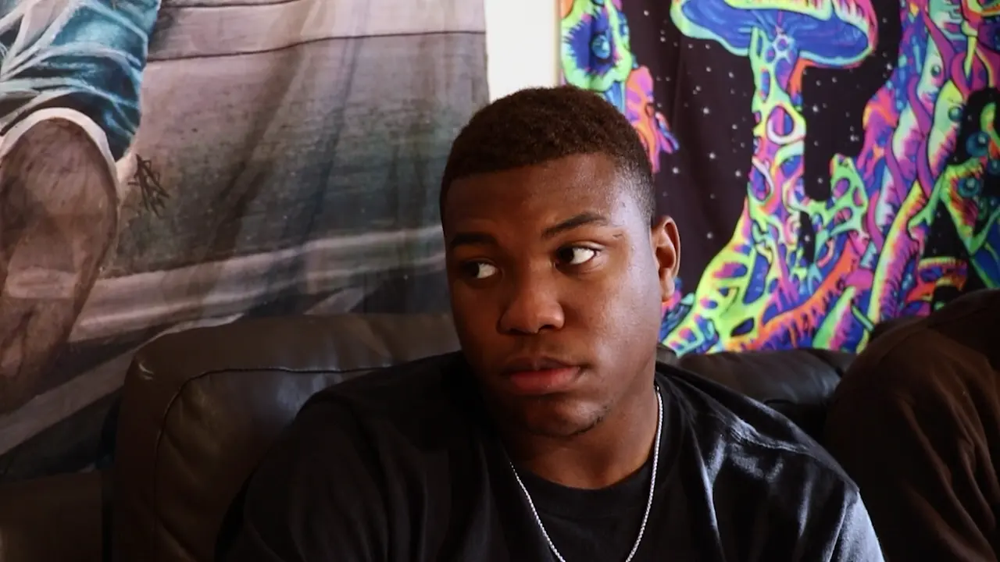
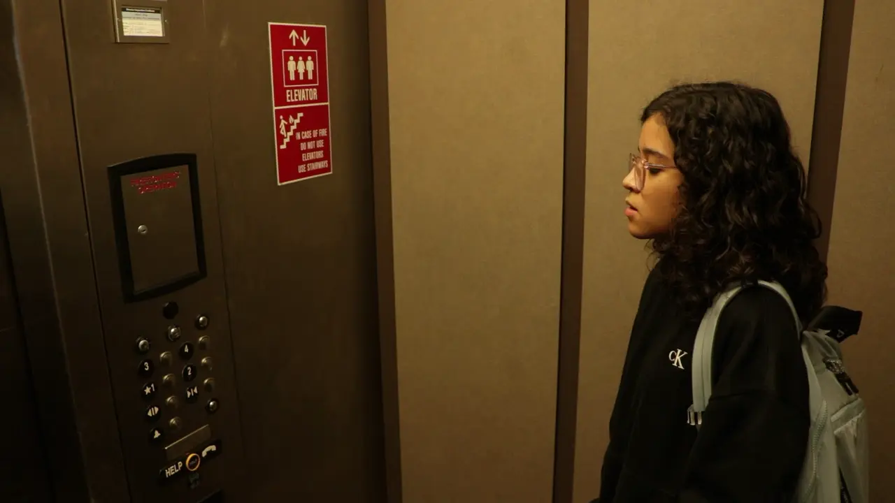
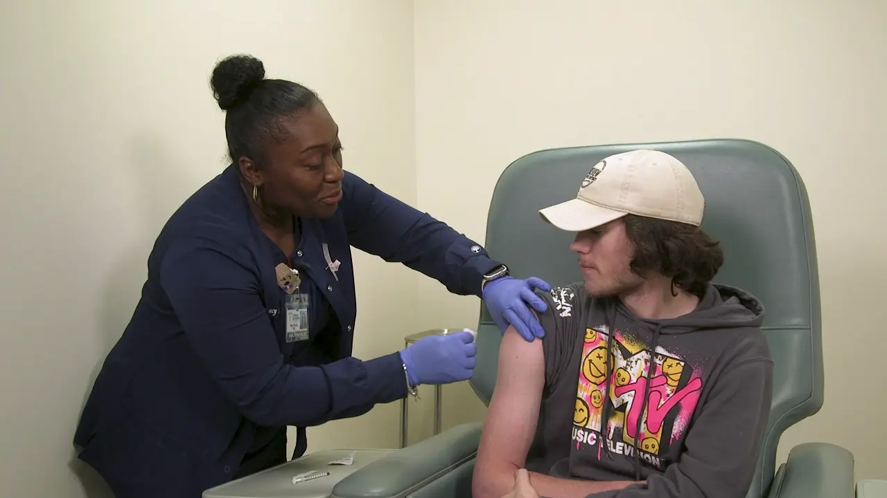

Affogato
Product photography: espresso poured over ice cream, lit to show the glass, the stream and the melt.
See all 12 photosCinematographer and photographer in Las Vegas
The clips above are from two short films I shot.
I grew up in Colombia, studied multimedia and film at Georgia Southern University, and now work behind the camera in Las Vegas.
I light, shoot and grade. My work runs from narrative shorts to product and portrait photography, and I film live events, where the job is to find the quiet moment in a loud room.
Short films I shot, one I also directed, a health-services spot and a wedding film. Each one plays right here.

PlayDirector and cinematographer
A three-minute short made at Georgia Southern University.
 Play
Play
Cinematographer and colorist
A short film about depression, friendship and mental health. I was also the whole lighting, camera and grip department.

PlayCinematographer
A one-minute short set almost entirely inside an elevator.

PlayCinematographer
A 45-second spot for Georgia Southern University Health Services, filmed in the clinic with real staff.
 Play
Play
Cinematographer
A three-minute short inspired by The Matrix.
 Play
Play
Cinematographer
A two-minute short made for a GFA project.
 Play
Play
Wedding highlight film
A highlight film from a Las Vegas wedding.
Three series, each made in one session. Open one to see the whole set.
Product photography: espresso poured over ice cream, lit to show the glass, the stream and the melt.
See all 12 photosGraduation portraits for two students, made on campus in May 2025.
See all 14 photosPortraits of a performer, lit to keep the face and the instrument in one pool of light.
See all 3 photosMy own kit, the tools I edit with, and the kinds of work I shoot.
I grew up in Colombia with a dream bigger than myself. It took shape when I moved to the United States to study multimedia and film, where I learned to watch people closely.
That path led me to Las Vegas, a city that runs at a hundred miles an hour. It made my job clearer: when the room is loud and the energy is frantic, I’m the one watching for the story.
I’m drawn to unscripted moments, the ones that happen when people stop performing, and to the light that makes them read on screen.
Tell me about the role or the project. I reply within a day.